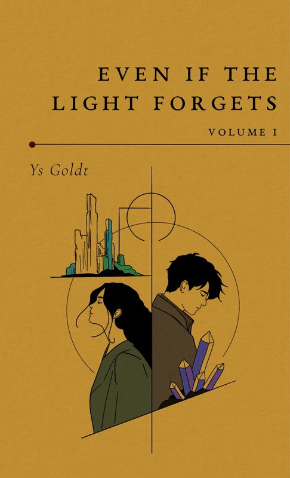

Novel
Even if the Light Forgets — Volume I
She’s spent her whole life learning not to need anyone. He’s spent his learning he doesn’t deserve to be needed.
An adult fantasy of alchemy, ruin, slow-burn romance, found family, and fragile hope.
- Print length
- 298 pages
- ISBN
- 9798996205202